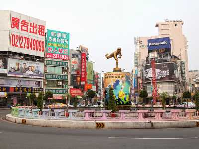
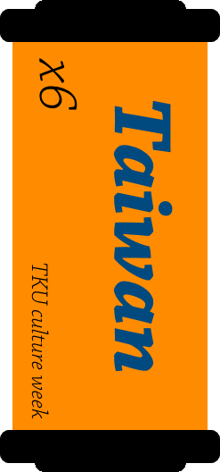

關於嘉義
INTRODUCE
如京都般嘉義，每年吸引無數的觀光客前來阿里山賞櫻、看日出，古都般的嘉義也保留了日治時期的建築，並將他加以翻修也成了現在的“檜意森活村”，而走進這裡有如來到了嘉義的小松創。醬汁撲鼻鮮肉彈牙的雞肉飯更是嘉義的驕傲，還有清晨又有人搶著排隊的”福義軒”以及一口接一口讓人停不下來的方塊酥。
巷弄間的美食，古色古香的景點都等著你我來探索。
私房嘉義
SECRET
Daisy的雜貨店
屋子裡有甜點
山門水上咖啡
射日塔
月影潭心
嘉義小故事
HISTORY

嘉義圓環
在台灣清治時期曾是嘉義城牆一部分的嘉義圓環，被市民稱為「桃仔尾」。台灣日治時期，嘉義城牆被拆除，遂變為交通圓環，並且已有一個小型噴水池。
後來近20年前時任嘉義市長許世賢在拓寬中山路時將圓環改建為七彩噴水池，並且在噴水池中央處豎立一座孫中山雕像。

一直到近年KANO的電影上映後造成熱潮，大家更對嘉義這地方有了新一層的認識，又於噴水池新建嘉義出身嘉農隊著名棒球選手吳明捷的雕像。


聯絡我們
CONTACT


※頁面上些許照片取自google，如有版權問題歡迎隨時聯絡，必定盡力配合，感謝。
© Copyright c-week.elebymax.net 2016